A volunteer-hours tracker for the Aberjona chapter of the Tri-M Music Honor Society. Members sign up for events and log service; officers run events, take attendance, and manage the roster — with email at every moment that matters.
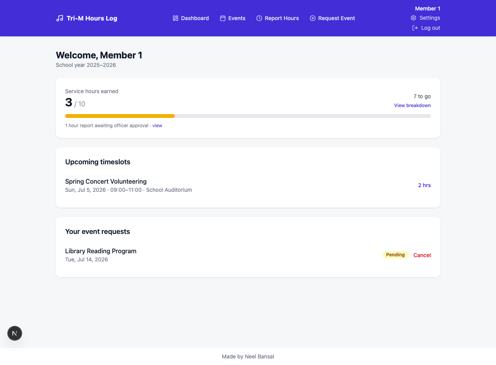
Rewritten from the original Flask demo as a multi-user Next.js 15 app with real authentication, transactional email, and a Google Sheets backup.
Officers generate invite links with expiry and optional max-uses. Email verification is required before first login; password reset works over email too.
Every member sees hours earned vs. the yearly goal. Bars turn yellow at 30% and green at 70%, with pending self-reports called out separately.
Events carry one or more timeslots with hours values and volunteer caps. Full slots queue a FIFO waitlist that auto-promotes and emails the next member.
New events, approvals, denials, credited hours, waitlist promotions, cancellations, and a one-click personalized hours-reminder broadcast.
Each attendance submission appends credited-hours rows (member, hours, event, date) to a spreadsheet via a service account.
Zod validation, rate-limited auth endpoints, no account enumeration, hashed one-time tokens, bcrypt passwords, and role checks re-verified in every server action.
All screenshots come from the running app seeded with demo data.
The public front door, invite-only signup, and self-service password recovery.
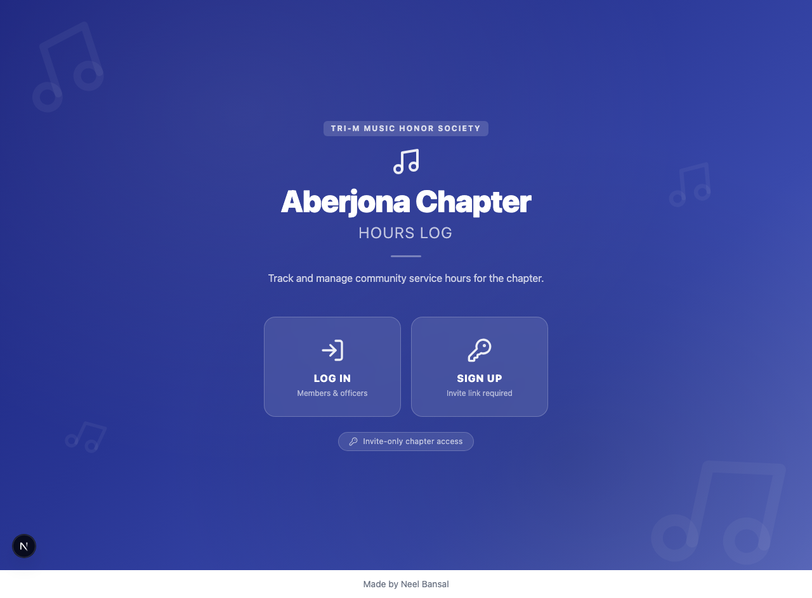
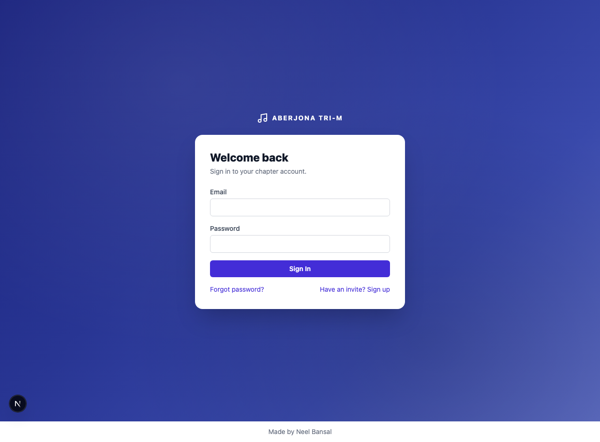
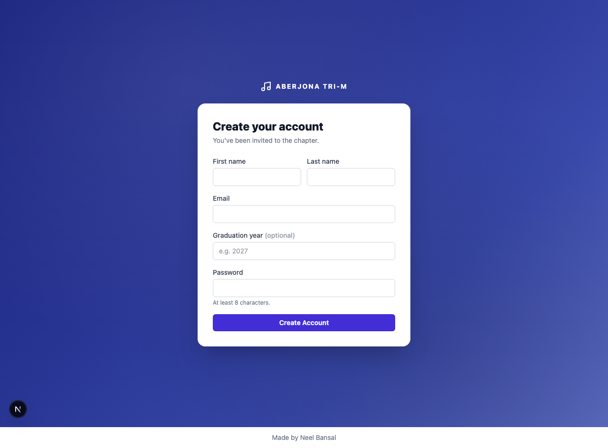
Dashboard, event signups, an itemized hours ledger, self-reported hours, and event requests.
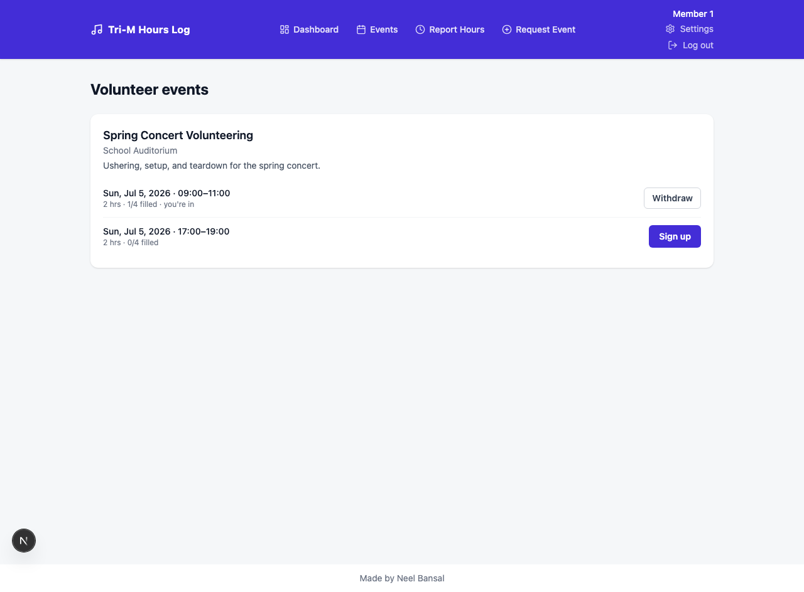
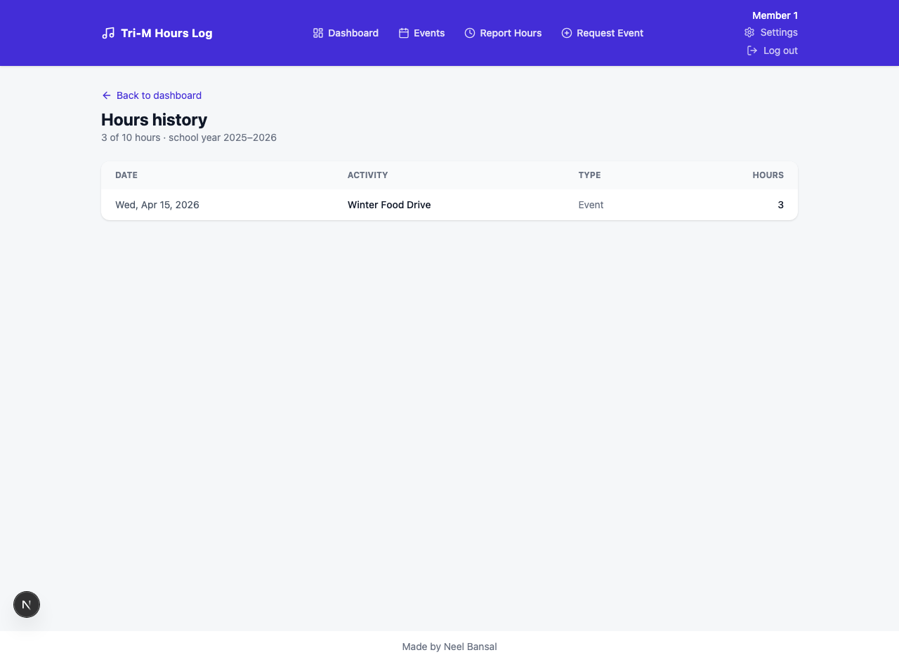
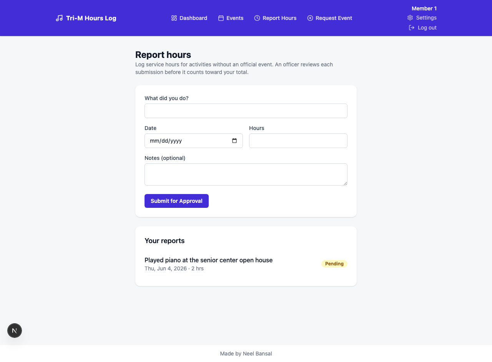
Everything officers need: events, attendance, the review queue, roster, invites, and the admin hub.
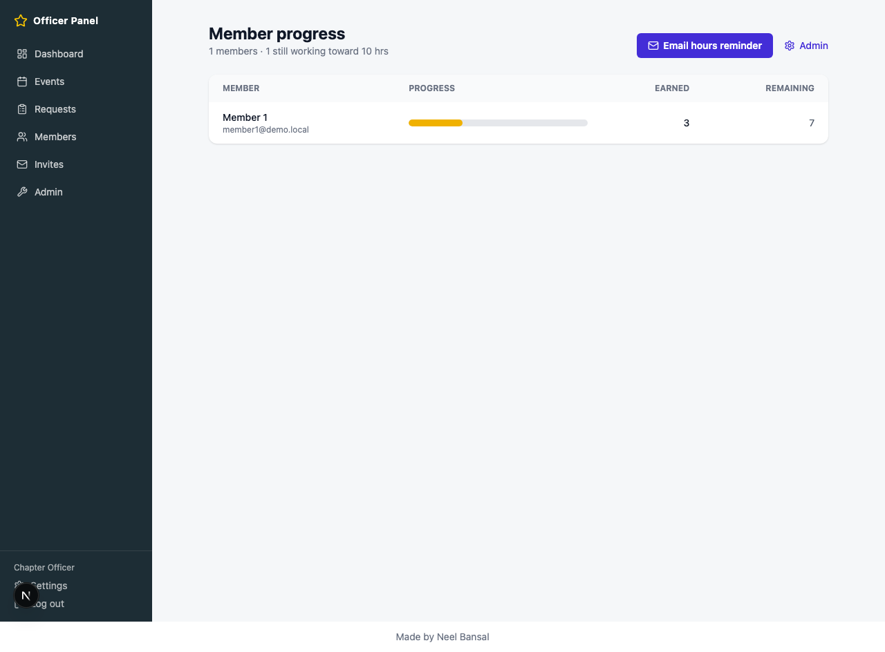
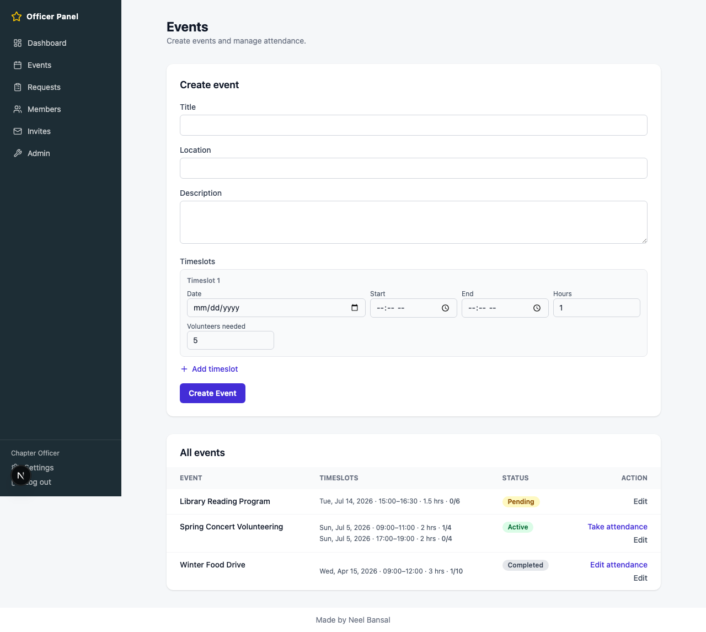
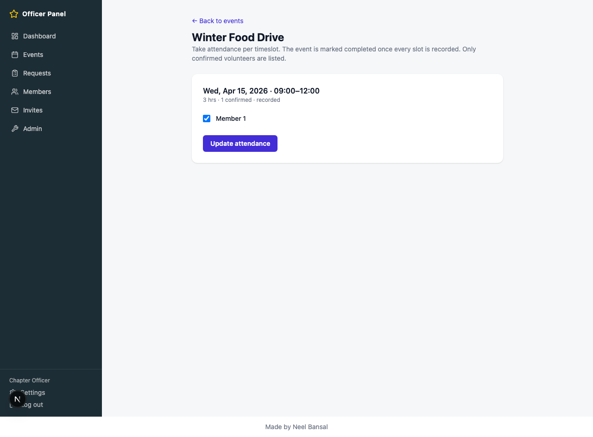
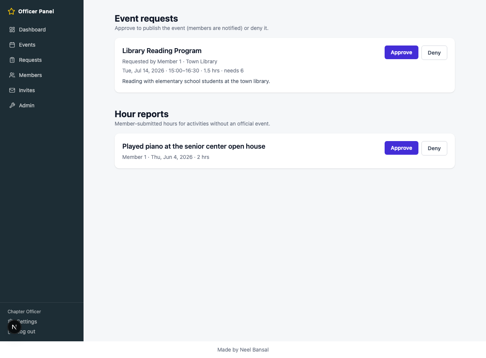
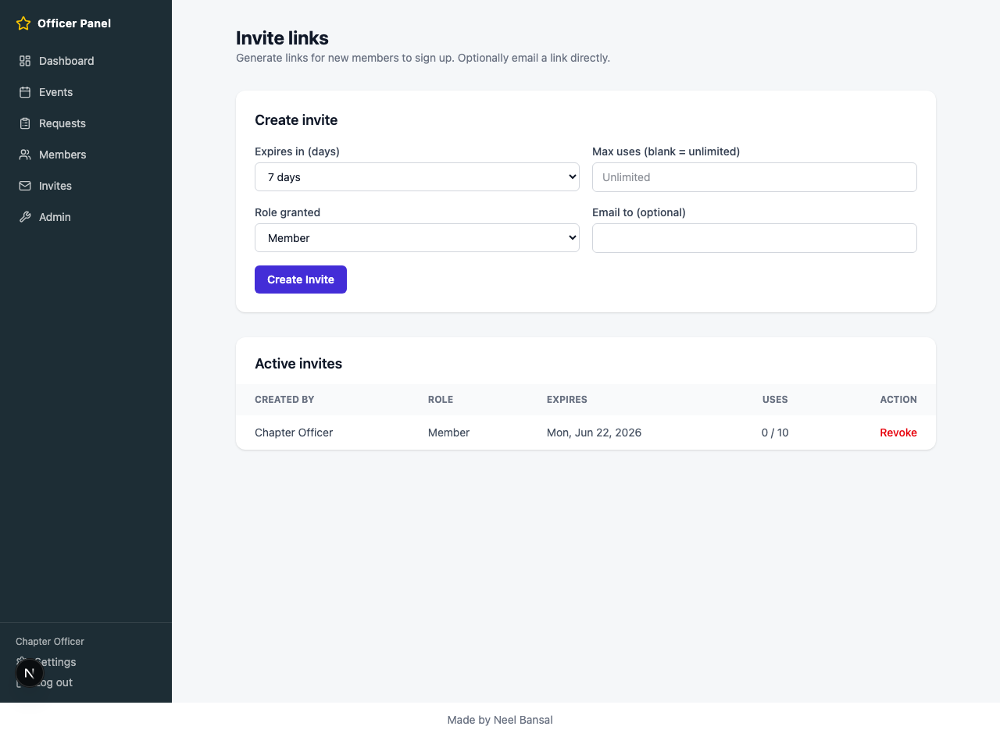
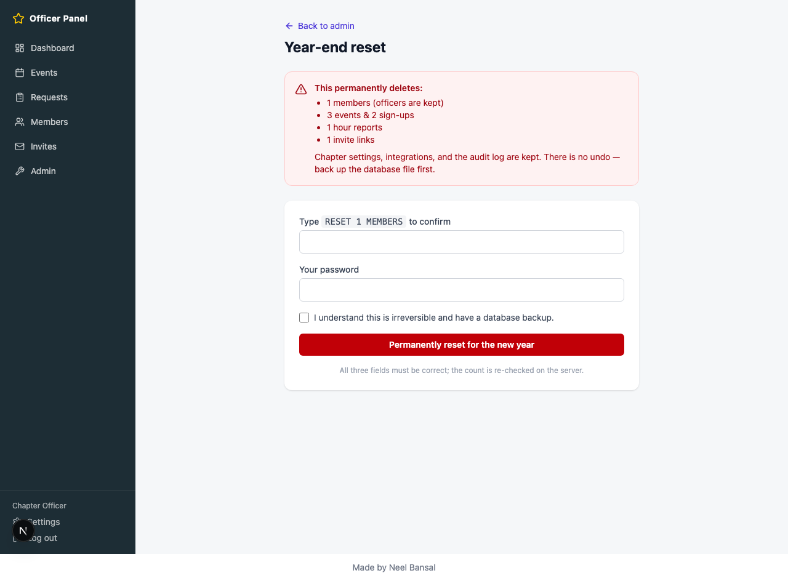
You need Node.js 18+ and npm. The database is SQLite, so there is nothing else to install.
Clone the repo, install dependencies, and copy the example environment file.
git clone https://github.com/ItsRecharge/aberjona-trim-hours
cd aberjona-trim-hours
npm install
cp .env.example .envOpen .env and set: DATABASE_URL (e.g. file:../data/app.db), SESSION_SECRET (generate with openssl rand -base64 32), APP_URL (http://localhost:3000 for dev), and the bootstrap officer's BOOTSTRAP_OFFICER_EMAIL / BOOTSTRAP_OFFICER_PASSWORD / BOOTSTRAP_OFFICER_NAME. Optionally set SEED_DEMO=true to get demo events and a demo member.
Migrations create the SQLite file; the seed script creates the bootstrap officer (pre-verified, so no email round-trip is needed).
npx prisma migrate dev
npm run db:seednpm run dev # http://localhost:3000Log in with the bootstrap officer account → go to Invites → create an invite link → open it to sign up a member → verify via the emailed link → log in. Officers create events and take attendance; members sign up and watch their progress bar fill toward the yearly goal.
Both are no-ops until configured — the app runs fine without them. Configure Gmail (app password) and the Google Sheets service account either in .env or live from the Officer Panel → Admin → Integrations page, no redeploy needed.
npm test # vitest: pure logic + service tests on a temp SQLite DB
npm run typecheck # tsc --noEmit
npm run build # production buildprovider to Postgres for scalemiddleware.tsMembers browse events, sign up for timeslots, self-report hours, request events, and track progress. Officers get the Officer Panel: events, attendance, the review queue, roster management, invites, and the admin hub (chapter settings, integrations, audit log, year-end reset). Role checks are enforced in middleware and re-checked against the database in every server action.
The school year runs Sept 1 – Aug 31. Three things count toward the yearly goal:
The chapter's yearly goal (set in Chapter settings) drives every progress bar: yellow at 30%, green at 70%.
When a timeslot is full, joining places the member on a FIFO waitlist. If someone withdraws, the next person is automatically promoted and emailed.
Clears outgoing members and the year's activity while keeping officers, chapter settings, integrations, and the audit log. Guarded by a triple gate: type the dynamic phrase RESET <N> MEMBERS, re-enter your password, and tick the confirmation box. The count is re-checked server-side.
| Variable | Purpose |
|---|---|
DATABASE_URL | SQLite path, e.g. file:../data/app.db (required) |
SESSION_SECRET | HS256 signing key — openssl rand -base64 32 (required) |
APP_URL | Base URL used inside email links (required) |
BOOTSTRAP_OFFICER_* | EMAIL / PASSWORD / NAME for the first officer, created pre-verified by the seed (required) |
SEED_DEMO | true seeds demo events + a demo member (local only) |
GMAIL_USER, GMAIL_APP_PASSWORD | Outgoing mail. Unset → all email becomes a no-op |
GOOGLE_SHEETS_SPREADSHEET_ID, GOOGLE_SERVICE_ACCOUNT_EMAIL, GOOGLE_SERVICE_ACCOUNT_KEY | Sheets backup. Key is base64-encoded to avoid newline issues. Unset → no-op |
| Trigger | Recipient |
|---|---|
| Invite / verification / email change / password reset | The affected user |
| New event posted | All active members |
| Event request approved or denied | The requesting member |
| New event request submitted | All officers |
| Hours credited from attendance | The credited member |
| Hour report approved or denied | The reporting member |
| Waitlist spot opens | The promoted member |
| Event cancelled | Signed-up members |
| Hours reminder (officer button) | Every active member, personalized |
Broadcasts are sent BCC in chunks to stay inside Gmail's ~500 recipients/day cap.
Chapter rosters are curated — open registration would let anyone claim membership. Officers generate invite links with an expiry and an optional max-use count, and can revoke any outstanding link. Opening /signup without a valid invite shows an "invite required" message.
Three things: hours credited by officers taking attendance at events, self-reported hours after an officer approves them, and manual officer adjustments (which can be negative, with a reason). The year runs September 1 to August 31.
Bars are color-coded against the chapter's yearly goal: yellow from 30%, green from 70%. The goal itself is configurable in Officer Panel → Admin → Chapter settings, and every member's "hours remaining" math follows it.
Joining a full slot adds you to a first-in-first-out waitlist. If a confirmed volunteer withdraws, the first person on the waitlist is automatically promoted and notified by email — no officer action needed.
Yes. Both integrations are deliberate no-ops until configured. Everything else — signups, events, attendance, approvals — works normally; you just won't get emails or the spreadsheet backup. You can add both later from the Integrations page without redeploying.
With SEED_DEMO=true, the seed creates demo data including an officer (officer@demo.local / OfficerDemo1!) and a member (member1@demo.local / MemberDemo1!). This is for local use only.
Open Officer Panel → Members, click the member, and use Promote to officer under Manage. The same page lets you deactivate an account or adjust hours.
Use Officer Panel → Admin → Year-end reset. It removes outgoing members and the year's activity but keeps officers, chapter settings, integrations, and the audit log. It's irreversible, so it's guarded by three confirmations, and the page recommends backing up the database file first.
Yes — change the Prisma datasource provider to postgresql, point DATABASE_URL at your database, and re-run migrations. Recommended once you outgrow a single chapter or need concurrent writes.
The most common issues, with the fix for each.
Email is a no-op until Gmail is configured. Set GMAIL_USER and GMAIL_APP_PASSWORD in .env, or configure them live under Officer Panel → Admin → Integrations.
Note the password must be a Google App Password (requires 2-Step Verification, created at myaccount.google.com/apppasswords) — your normal Gmail password will not work. Also remember Gmail caps at ~500 recipients/day.
prisma migrate dev fails or the DB file is missingCheck DATABASE_URL — the SQLite path is resolved relative to the prisma/ directory, which is why the example is file:../data/app.db. Make sure the data/ directory exists and is writable.
To start over locally: delete data/app.db, re-run npx prisma migrate dev, then npm run db:seed.
Session cookies are signed with SESSION_SECRET. If that value changes (new .env, redeploy with a different secret), every existing session cookie becomes invalid and all users must log in again. Keep the secret stable across deploys.
Auth endpoints are rate-limited in memory. Wait a minute and retry (or restart the dev server locally, which clears the in-memory counters). If you're deploying multiple instances or serverless, move rate limiting to Redis/Upstash — the per-process limiter won't behave correctly there.
Invites expire and can carry a max-use count; either condition invalidates the link, as does an officer revoking it. Check Officer Panel → Invites → Active invites for its status, or just generate a fresh link.
Links inside emails are built from APP_URL. Set it to exactly the origin users visit — http://localhost:3000 in dev, your real domain in production (no trailing slash).
Three usual causes:
1) The spreadsheet was never shared with the service account's email as an editor — this is the step most people miss.
2) GOOGLE_SERVICE_ACCOUNT_KEY wasn't base64-encoded, so newlines in the private key broke parsing.
3) The target tab isn't Sheet1 — rows are appended to Sheet1!A:D.
Run on another port with npm run dev -- -p 3001 (and update APP_URL to match so email links stay correct).
Service tests run against a temporary SQLite database built from the current Prisma schema. Regenerate the client after schema edits (npx prisma generate) and make sure migrations are up to date (npx prisma migrate dev) before npm test.